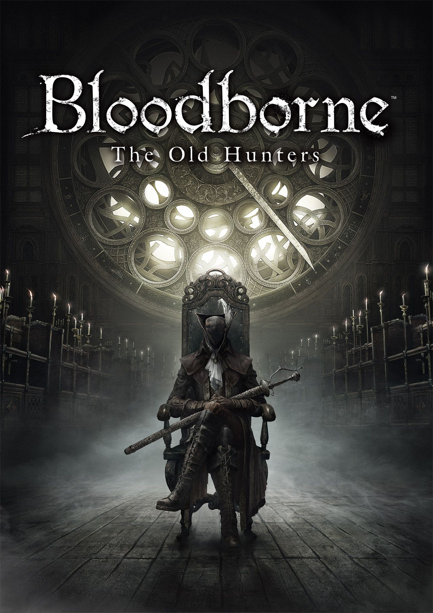

FromSoftware-Souls Serisi:
- Demon's Souls (2009)
- Dark Souls (2011)
- Dark Souls 2 (2014)
- Dark Souls 2: Scholar of the First Sin (2015)
- Bloodborne (2015)
- Dark Souls 3 (2016)
- Dark Souls Remastered (2018)
- Sekiro: Shadows Die Twice (2019)
- Elden Ring (2022)

Boletarya'nın 12. kralı Kral Allant, güce duyduğu açlıkla kadim ruh sanatlarına başvurdu ve zamanın başlangıcından beridir var olan bir iblisi, yani Kadim Varlık'ı uyandırdı. Kadim Varlık'ın çağrılmasıyla birlikte solgun bir sis, diyarı pençesine aldı ve kâbuslardan fırlamış, insan ruhuna susamış yaratıkları serbest bıraktı. Ruhlarından yoksun bırakılanlar akıllarını yitirdi. İçlerinde kalan tek dürtüyse, aklı başında olanlara karşı duydukları dizginsiz bir saldırı arzusuydu. Boletarya'nın dış dünyayla iletişimi koptu ve diyarı bu musibetten kurtarma çabasıyla derin sisi aşmaya cüret eden şövalyeler bir daha geri dönmedi. Bu ölümcül sise meydan okuyan yalnız bir savaşçı olarak, "İblis Avcısı" unvanını hak etmek ve Kadim Varlık'ı tekrar ebedî uykusuna yatırmak için en zorlu sınavlarla yüzleşmelisin.

Bu oyun, ölümsüzlerin lanetli bir işareti olan Dark Ring'in ortaya çıktığı kaotik bir dünyada geçiyor. Ana karakter, laneti kaldırmak için kralların kutsal sayıldığı Lordran'a hacca gider. Bu aksiyon rol yapma oyunu, gergin keşif, keşif ve canavarlarla tanışma korkusu gibi bir RPG'nin temel eğlencesine odaklanır. Oyuncular oyunda ilerleme kaydettiklerinde büyük bir başarı duygusu kazanacaklar.

Bu oyun, ölümsüzlerin lanetini iyileştirmenin çaresinin bulunabileceği, kurgusal Drangleic krallığında geçmektedir. Oyuncu, ruhları toplamak için yolculuğuna Madula'da başlar. Karanlık zindanlarda ilerlemek ve korkunç düşmanlarla karşılaşmak, oyuncuları gergin ve gergin hissettiriyor ancak oyun aynı zamanda oyunculara güçlü bir başarı, eğlence ve keşif duygusu getiriyor.

DARK SOULS™ II: Scholar of the First Sin, serinin meşhur bilinmezliğini ve oynanabilirliğini yepyeni bir seviyeye taşıyor. Bu karanlık maceraya katıl ve zorlu düşman karşılaşmalarına, şeytani tehlikelere ve acımasız zorluklara diren.

KORKULARINIZLA YÜZLEŞİN
Bloodborne™'un tüyler ürperten dünyasında geçen yeni bir hikâyeyi deneyimleyin. Uzun zaman önce eski avcılar, Byrgenwerthgo'nun harabelerine korkunç sırları gömer. Ama bu sırlar gün yüzüne çıkmak üzeredir. Tehlikelerle, ödüllerle ve ölümcül şeflerle dolu Saat Kulesi ve Avcı'nın Kâbusu gibi yepyeni ortamları keşfedin ve bir zamanlar Yharnam'ı kendi avlanma sahaları yapmış avcıların sarsıcı öyküsünü öğrenin. Birden fazla kıyafet ile birlikte yepyeni bir menzilli mücadele deneyimi için Simon'ın Yaykılıcı dâhil olmak üzere cephaneliğinize ekleyeceğiniz yeni dönüşebilir silahlar bulacaksınız. Karanlık büyülerle oynayın ve kendinizi korkunç bir canavara dönüştürün. Yharnam'a tekrar hoş geldiniz…

Ateşler sönüp dünya yıkıma uğrarken daha büyük düşmanlarla ve ortamlarla dolu bir evrene git. Oyuncular, daha hızlı bir oyun ve daha yoğun bir savaş deneyimiyle destansı bir atmosfere girecek. Hem eski hayranlar hem de yeni oyuncular, sürükleyici bir oyuna ve grafiklere boğulacak. Artık sadece amberler var... Kendini bir kere daha hazırla ve Karanlığı Kucakla!

Ve sonra ateş zuhur etti. Her şeyin başladığı, kendi türünün öncüsü, büyük beğeni toplayan oyunu yeniden keşfet. Özenle yeniden düzenlenmiş oyunda, 60 fps hızda, en ince detaylara kadar muhteşem bir görsellikte Lordan'a geri dön.

Bloodborne Dark Souls serisinin yaratıcısı FromSoftware tarafından geliştirilen, son derece olumlu eleştiriler almış bu macera oyununda intikama giden yolda emin adımlarla ilerle. Karanlık ve çarpık bir dünyada gerçeküstü düşmanlarla yüzleşirken Japonya'da 1500'lü yılların sonlarına denk gelen Sengoku dönemini keşfet. Ölümcül protez silahlarını ve güçlü ninja yeteneklerini kullanırken kanlı çatışmalarda gizlice yaklaşma, çaprazlama vuruş ve içgüdüsel bire bir çarpışma becerilerini hayata geçir. İntikamını al. Onurunu geri kazan. Ustalıkla öldür.

Tarnished, yüksel ve zarafetin seni yönlendirmesine izin ver. Elden Ring'in gücünü kullan ve Lands Between'de bir Elden Lord ol.